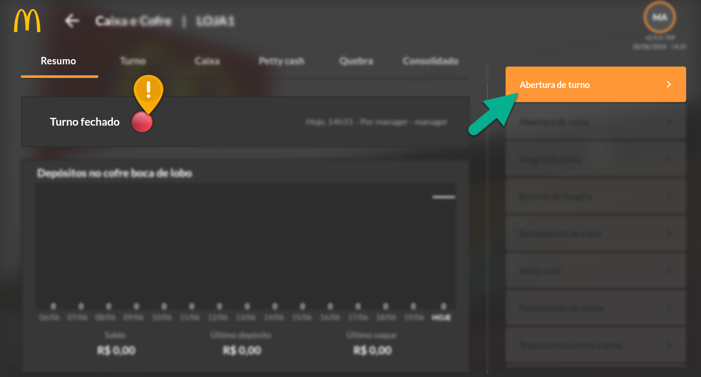
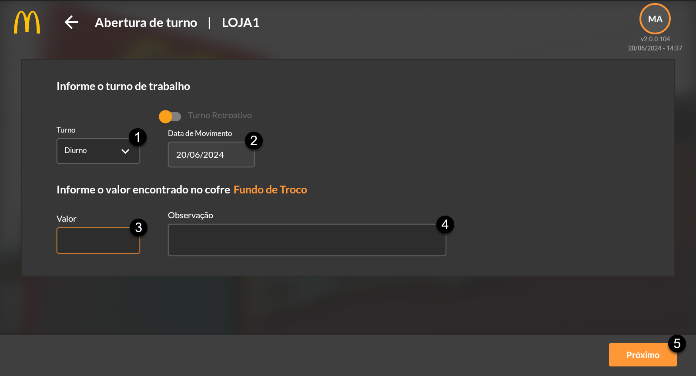
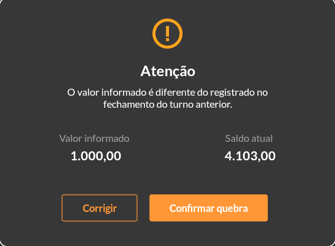
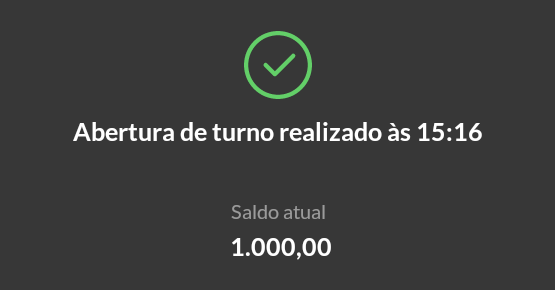
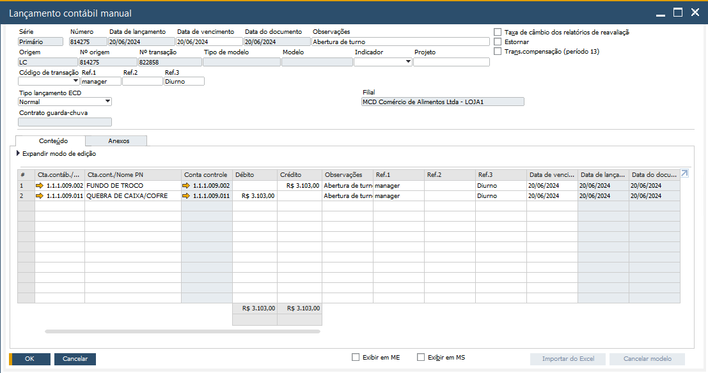
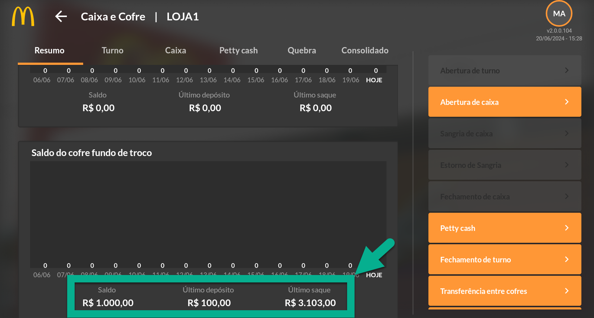

Abertura de Turno
O processo de usabilidade do aplicativo deve iniciar com a abertura de turno. A abertura é fundamental para que os demais módulos produtivos possam ser utilizados, como por exemplo os módulos de Compras e Estoque. Sempre se certifique de que o turno está aberto para realizar lançamentos.
{kind=link}
Clique no botão adequado para realizar a abertura do seu turno de trabalho. (!) Note que há uma indicação do status do turno, no exemplo o turno está fechado.
{kind=link}
Ao clicar em Abertura de Turno, defina qual o turno de trabalho (1) está sendo aberto. Certifique-se que a data (2) está de acordo com a abertura. Em caso de necessidade de abrir retroativo, clique “Turno Retroativo” e insira a data desejada.
Em Valor (3) informe o saldo encontrado no cofre. Esse controle é necessário para identificar se o turno a ser aberto está com o mesmo valor em cofre do turno anteriormente fechado. O valor informado deverá ser o encontrado no FUNDO DE TROCO. Defina uma observação (4) para a ação, se necessário. Finalizado os preenchimentos, clique em Próximo (5). Ao inserir valor igual ao registrado pelo gerente anterior, o processo de abertura será finalizado.
Caso o valor informado não esteja em conformidade com o registrado pelo gerente anterior, considerado como informação divergente ao encontrado no Fundo de Troco, o aplicativo retornará com uma mensagem de atenção informando a divergência.
Nessa tela, é permitido ajustar o lançamento, em caso de erro de digitação, por exemplo ou, lançar o valor informado considerando como correto. Neste caso a divergência será lançada como quebra de caixa.
{kind=link}
Considere o exemplo: Ao abrir o turno, foi informado que há R$1000,00 no cofre fundo de troco. Porém, em registro havia a informação de que no fundo de troco tinha saldo de R$4.103,00. O sistema apresentou a mensagem de atenção informando a divergência, porém o gerente confirmou que o correto seria R$1.000,00 aceitando a quebra de caixa.
{kind=link}
Note que foi gerado no SAP um Lançamento Contábil Manual automático, considerando a quadra de caixa de R$3.103,00, sendo que dos R$4.103,00, R$1.000,00 já estava no Fundo de Troco.
{kind=link}
Finalizado o processo o turno estará aberto e algumas funções ficarão disponíveis para acesso.
{kind=link}
Veja que foram atualizados os valores dos saldos do cofre fundo de troco na tela de Resumo. Veja que em Saldo há os R$1.000,00 informado na abertura, Último Depósito de R$100,00 referente a lançamentos anteriores realizados em outro turno.
As opções de: Sangria, Estorno de Sangria e Fechamento de Caixa ficarão indisponíveis neste primeiro momento pois serão habilitadas ao realizar a abertura de caixa, tema do próximo tópico.